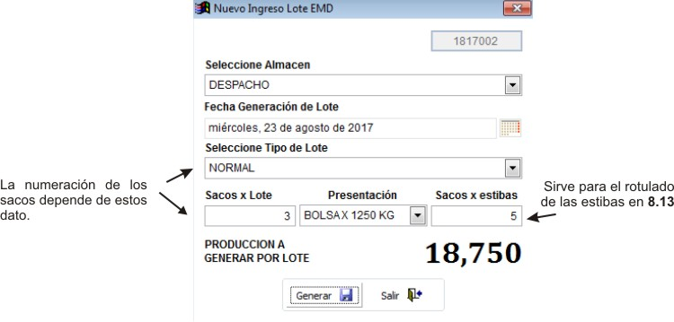
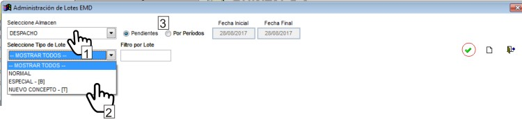
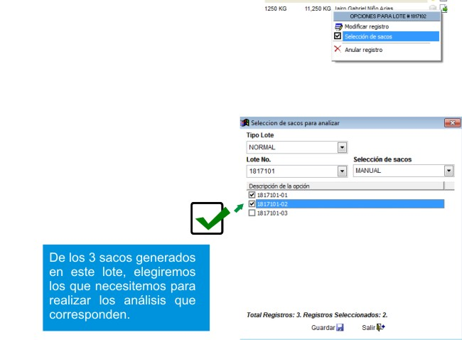
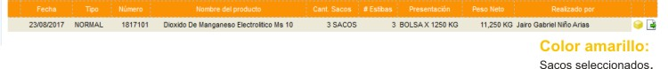
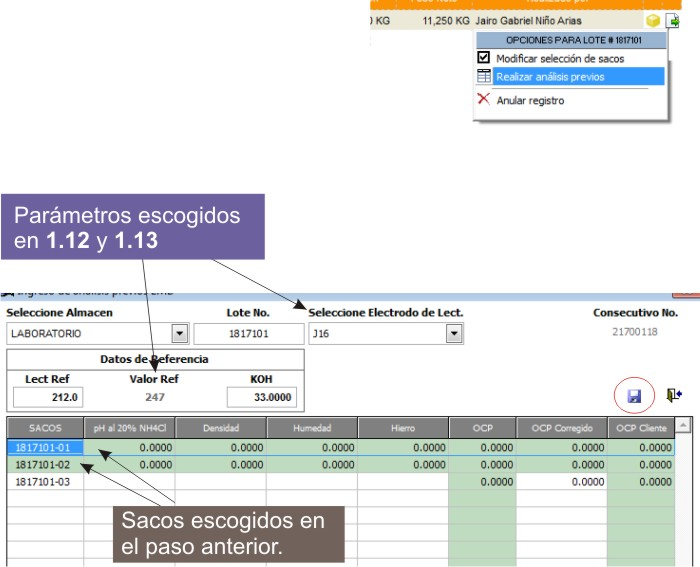
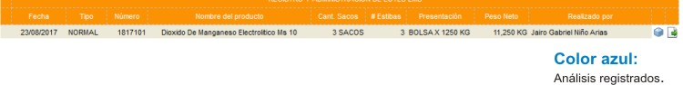
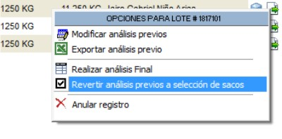
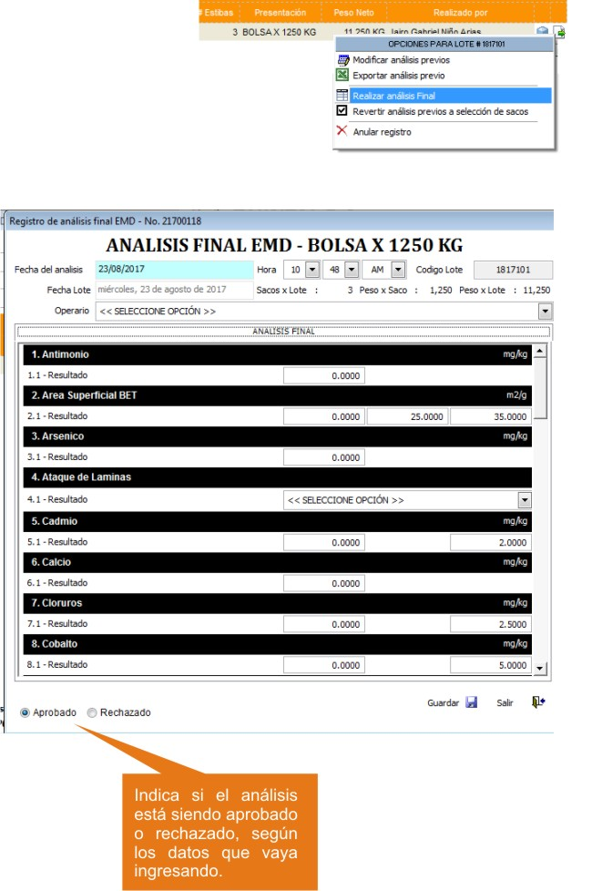
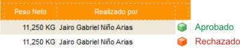
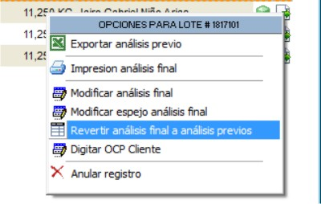

Generación y Administración de Lotes EMD¶
Módulo: Real Q Grupo: Materia Prima Descripción: Registro de ingreso de materias primas
Introducción¶
Este administrador le permite buscar, anular, eliminar, crear y clasificar los Lotes de EMD. El estado de un ingreso de mercancía se ve anunciado en la parte inferior de la ventana.
Los lotes pueden ser clasificados en varios tipos según su consecutivo y algunas otras normas, como está especificado en: Creación de tipos de lote y selección de consecutivos EMD
Guía de pasos para el ingreso de EMD al inventario¶
Crear Nuevo Ingreso Lote EMD
Selección de sacos para analizar
- Análisis previos: Son algunos análisis que se registran sobre los sacos seleccionados.
- Si escogió que el ingreso sería de un lote combinado, ahora deberá seleccionar los sacos que conformarán el nuevo ingreso.
Análisis final: Análisis completo. Aquí puede corregir los análisis previos.
Crear Nuevo Ingreso Lote EMD¶
Ejecute la opción Generación y Administración de Lotes EMD
Presione
En la ventana emergente seleccione el almacén al cual hará el ingreso
ELija la fecha de generación del lote (Influye en el código generado)
Escoja el tipo de Lote. Vea, Creación de tipos de lote y selección de consecutivos EMD
Ingrese el número de Sacos por Lote
Escoja la presentación del EMD
Ingrese el número de sacos por estiba
La producción por lote multiplica los sacos * kg de la presentación * sacos por estiba
Haga click en
Generar


Buscar un Ingreso EMD¶
Ejecute la opción Generación y Administración de Lotes EMD
En la lista “Seleccione Almacén” escoja el almacén donde hará el ingreso de mercancía
Si selecciona “Pendientes” aparecerán solo aquellos registros nuevos que estén en la fase 1. Seleccione “Por periodo” y escoja una fecha oportuna para ver todos los ingresos en ese periodo, sin importar la fase.
En la lista “Tipo de lote” facilite la búsqueda eligiendo el tipo de lote que seleccionó al crear el ingreso. No es obligatorio
Si conoce el número del lote, puede saltarse los pasos anteriores y usar la casilla “Filtro por lote” para buscar uno en específico
Haga click en

Modificar un ingreso/registro¶
- Escoja un registro de ingreso de la grilla. Vea, Buscar un Ingreso EMD
- Al final de la fila haga click en
- En el menú desplegado haga click en “Modificar registro”
- Verá la misma ventana que en la creación del registro. Modifique los datos oportunos.
- Haga click en

Seleccionar sacos para analizar¶

Escoja un registro de ingreso de la grilla. Vea, Buscar un Ingreso EMD
Al final de la fila haga click en
En el menú desplegado haga click en “Seleccionar sacos”
En la nueva ventana, seleccione la forma de elección de los sacos en la lista “Selección de sacos”
Si elige ‘Manual’ seleccione las casillas correspondientes a los sacos que quiere
Haga click en

Realizar Análisis Previos¶

Escoja un registro de ingreso de la grilla. Vea, Buscar un Ingreso EMD
Al final de la fila haga click en
En el menú desplegado haga click en “Registrar análisis previos”
Seleccione el Electrodo de Lectura. Vea, Administración de electrodos de lectura EMD
Digite el valor de lectura referencial
Digite el valor KOH
Se desplegará una ventana con una grilla con todos los lotes. Los lotes en verde son los seleccionados en el paso anterior. Las celdas de los lotes verdes son editables.
Digite los valores en las celdas correspondientes a los análisis previos de los lotes y a sus valores OCP
Haga click en

Seleccionar Lotes Mezclados (Lote tipo Especial)¶
Si el tipo de lote lo amerita, antes de hacer el análisis final, puede seleccionar sacos de diferentes lotes; Mezclando lotes puede reunir sacos que han quedado rezagados en selecciones anteriores.
Si en el despacho de productos quedan lotes con 1 o 2 sacos, posiblemente queden rezagados. Se pueden renombrar todos estos sacos para unirlos a un solo gran lote.
- Escoja un registro de ingreso de la grilla. Vea, Buscar un Ingreso EMD
- Al final de la fila haga click en
- En el menú desplegado haga click en “Seleccionar lotes mezclados”
- En la ventana que emerge seleccione el lote con los sacos rezagados en la lista ‘Lote No.’ Verá cómo se despliegan los sacos pertenecientes a ese lote en el panel de la izquierda
- Arrastre los sacos que quiere mezclar en el nuevo ingreso y que pertenecerán a este nuevo lote
- Haga click en
Nota
Puede verificar la salida de los sacos, y la entrada al inventario como un nuevo lote en el movimiento de kardex por producto x tipo de transacción
Revertir Análisis Previos¶
Escoja un registro de ingreso de la grilla. Vea, Buscar un Ingreso EMD
Al final de la fila haga click en
En el menú desplegado haga click en “Revertir análisis previos”
En la ventana de confirmación presione Sí

Realizar Análisis final¶

Escoja un registro de ingreso de la grilla. Vea, Buscar un Ingreso EMD
Al final de la fila haga click en
En el menú desplegado haga click en “Realizar Análisis final”
En la ventana emergente podrá seleccionar la presentación para el ingreso y la calidad. Ambas opciones son especificadas en las configuraciones avanzadas de la materia prima
Se abre la ventana para el registro de los análisis del perfil correspondiente a EMD.
Digite la fecha del análisis del ingreso, al lado, elija la hora del registro
En la lista ‘Operario’ seleccione el operario
Cada barra negra indica un análisis diferente; llene los cuadros de texto con los resultados obtenidos de las muestras
En la parte inferior de la ventana puede observar el estado del análisis: Aprobado|Rechazado
Al finalizar presione
En la ventana emergente, escriba alguna observación y presione
Aceptar o F2

Revertir Análisis Final¶
Escoja un registro de ingreso de la grilla. Vea, Buscar un Ingreso EMD
Al final de la fila haga click en
En el menú desplegado haga click en “Revertir análisis final a análisis previos”
En la ventana de confirmación presione Sí

Digitar OCP cliente¶
- Escoja un registro de ingreso de la grilla. Vea, Buscar un Ingreso EMD
- Al final de la fila haga click en
- En el menú desplegado haga click en “Digitar OCP Cliente”
- En la ventana emergente verá una grilla con dos columnas, a la izquierda todos los sacos que seleccionó para el análisis. A la derecha puede ingresar el valor del OCP
- Presione